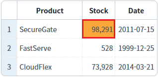
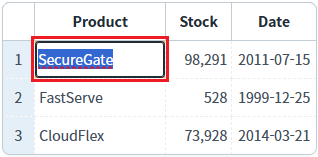
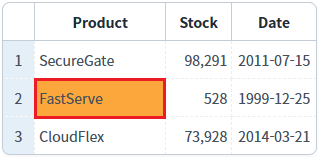
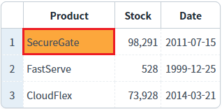

[GridView] Enter 키를 입력할 때의 동작 방식 설정하기
1개요
GridView의 'enterKeyMove' 속성을 사용하여, 셀에서 Enter 키 입력 시 동작하는 방식을 설정한 예제입니다.
2구현된 기능
(기본 설정) Enter 키 입력 시 아래로 포커스 이동
Enter 키 입력 시 오른쪽으로 포커스 이동
Enter 키 입력 시 수정 모드로 변경
Enter 키 입력 시, 셀이 출력모드인 경우는 수정 모드로 변경되고, 셀이 수정모드인 경우는 오른쪽으로 포커스 이동
Enter 키 입력 시, 셀이 출력모드인 경우는 수정 모드로 변경되고, 셀이 수정모드인 경우는 아래로 포커스 이동
Enter 키 입력 시 기능 없음
3예제 테스트 방법
3.1(기본 설정) Enter 키 입력 시 아래로 포커스 이동
예제 영역 '(기본 설정) enterKeyMove의 설정 값: down'에 구성된 GridView에서 테스트합니다.1
STEP 1: GridView의 셀을 클릭합니다.
GridView의 첫 번째 로우의 'Product' 컬럼의 셀을 클릭합니다.
Image 1.브라우저(Chrome) 실행 예시 - 셀 선택 예시

2
STEP 2: 선택된 셀에서 'Enter' 키를 누릅니다.
3
STEP 3: 실행 결과를 확인합니다.
GridView의 포커스가 아래(두 번째 로우)로 이동되는 것을 확인할 수 있습니다.
Image 2.브라우저(Chrome) 실행 예시 - 실행 결과

3.2Enter 키 입력 시 오른쪽으로 포커스 이동
예제 영역 'enterKeyMove의 설정 값: right'에 구성된 GridView에서 테스트합니다.1
STEP 1: GridView의 셀을 클릭합니다.
GridView의 첫 번째 로우의 'Product' 컬럼의 셀을 클릭합니다.
Image 3.브라우저(Chrome) 실행 예시 - 셀 선택 예시

2
STEP 2: 선택된 셀에서 'Enter' 키를 누릅니다.
3
STEP 3: 실행 결과를 확인합니다.
GridView의 포커스가 오른쪽(두 번째 컬럼)으로 이동되는 것을 확인할 수 있습니다.
Image 4.브라우저(Chrome) 실행 예시 - 실행 결과

3.3Enter 키 입력 시 수정 모드로 변경
예제 영역 'enterKeyMove의 설정 값: edit'에 구성된 GridView에서 테스트합니다.1
STEP 1: GridView의 셀을 클릭합니다.
GridView의 첫 번째 로우의 'Product' 컬럼의 셀을 클릭합니다.
Image 5.브라우저(Chrome) 실행 예시 - 셀 선택 예시

2
STEP 2: 선택된 셀에서 'Enter' 키를 누릅니다.
3
STEP 3: 실행 결과를 확인합니다.
GridView의 셀이 수정 모드로 변경되는 것을 확인할 수 있습니다.
Image 6.브라우저(Chrome) 실행 예시 - 실행 결과

3.4Enter 키 입력 시 셀이 출력모드인 경우는 수정 모드로 변경되고 셀이 수정모드인 경우는 오른쪽으로 포커스 이동
예제 영역 'enterKeyMove의 설정 값: editRight'에 구성된 GridView에서 테스트합니다.1
STEP 1: GridView의 셀을 클릭합니다.
GridView의 첫 번째 로우의 'Product' 컬럼의 셀을 클릭합니다.
Image 7.브라우저(Chrome) 실행 예시 - 셀 선택 예시

2
STEP 2: 선택된 셀에서 'Enter' 키를 누릅니다.
3
STEP 3: 실행 결과를 확인합니다.
GridView의 셀이 수정 모드로 변경되는 것을 확인할 수 있습니다.
Image 8.브라우저(Chrome) 실행 예시 - 실행 결과

4
STEP 4: 수정 모드에서 Enter 키를 누릅니다.
5
STEP 5: 실행 결과를 확인합니다.
GridView의 포커스가 오른쪽(두 번째 컬럼)으로 이동되는 것을 확인할 수 있습니다.
Image 9.브라우저(Chrome) 실행 예시 - 실행 결과

3.5Enter 키 입력 시 셀이 출력모드인 경우는 수정 모드로 변경 Cell이 수정모드인 경우는 아래로 포커스 이동
예제 영역 'enterKeyMove의 설정 값: editDown'에 구성된 GridView에서 테스트합니다.1
STEP 1: GridView의 셀을 클릭합니다.
GridView의 첫 번째 로우의 'Product' 컬럼의 셀을 클릭합니다.
Image 10.브라우저(Chrome) 실행 예시 - 셀 선택 예시

2
STEP 2: 선택된 셀에서 'Enter' 키를 누릅니다.
3
STEP 3: 실행 결과를 확인합니다.
GridView의 셀이 수정 모드로 변경되는 것을 확인할 수 있습니다.
Image 11.브라우저(Chrome) 실행 예시 - 실행 결과

4
STEP 4: 수정 모드에서 Enter 키를 누릅니다.
5
STEP 5: 실행 결과를 확인합니다.
GridView의 포커스가 아래(두 번째 로우)로 이동되는 것을 확인할 수 있습니다.
Image 12.브라우저(Chrome) 실행 예시 - 실행 결과

3.6Enter 키 입력 시 기능 없음
예제 영역 'enterKeyMove의 설정 값: none'에 구성된 GridView에서 테스트합니다.1
STEP 1: GridView의 셀을 클릭합니다.
GridView의 첫 번째 로우의 'Product' 컬럼의 셀을 클릭합니다.
Image 13.브라우저(Chrome) 실행 예시 - 셀 선택 예시

2
STEP 2: 선택된 셀에서 'Enter' 키를 누릅니다.
3
STEP 3: 실행 결과를 확인합니다.
GridView의 셀에 별도의 기능이 동작되지 않는 것을 확인할 수 있습니다.
Image 14.브라우저(Chrome) 실행 예시 - 실행 결과

4구현 예시
DataList 생성 및 연결은 생략되었습니다.
4.1Enter 키 동작 설정하기
GridView의 속성을 정의합니다.
[필수] enterKeyMove
아래의 옵션으로 설정합니다.
(옵션 설명)
down : (기본 값) Enter 키 입력 시 아래쪽 셀로 이동.
right : Enter 키 입력 시 오른쪽 셀로 이동.
none : Enter 키를 입력해도 포커스 이동이 없음.
edit : Enter 키 입력 시 편집 모드로 이동.
editRight : 처음 Enter 키 입력 시 편집 모드로 진입한 후, 다시 Enter 키를 입력하면 오른쪽 셀로 이동. 편집 모드에서 Enter 키를 입력할 경우 오른쪽 셀로 이동.
editDown : 처음 Enter 키 입력 시 편집 모드로 진입한 후, 다시 Enter 키를 입력하면 아래쪽 셀로 이동. 편집 모드에서 Enter 키를 입력할 경우 아래쪽 셀로 이동.
Example 1.Source
<!-- gridView 의 소스 본문 예시 --> <w2:gridView enterKeyMove="edit"> <!-- 중략 --> </w2:gridView>
5주요 API
enterKeyMove